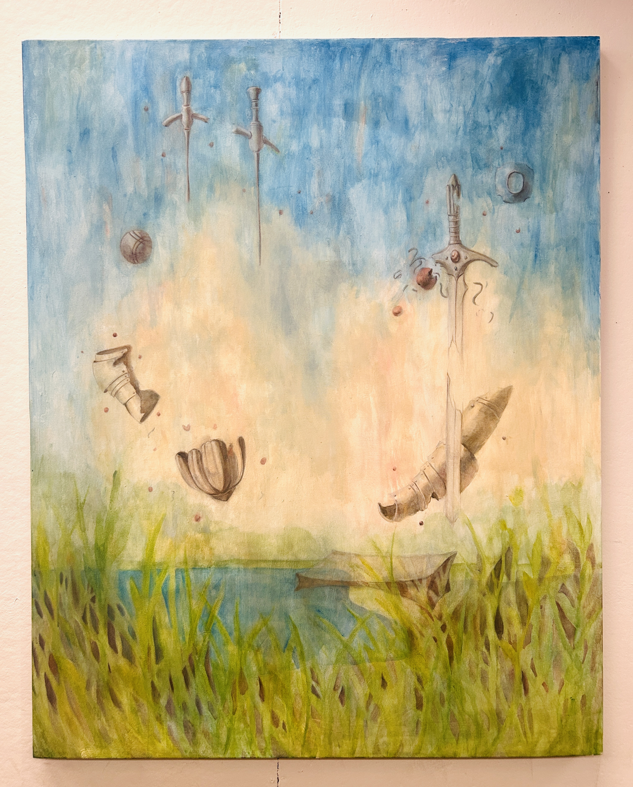
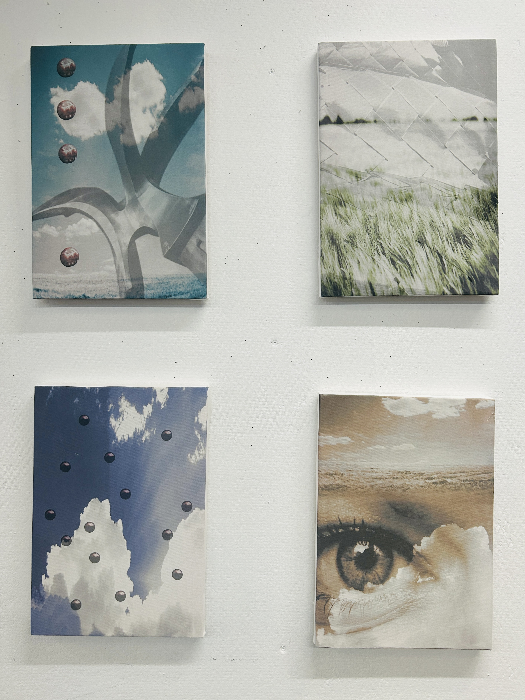
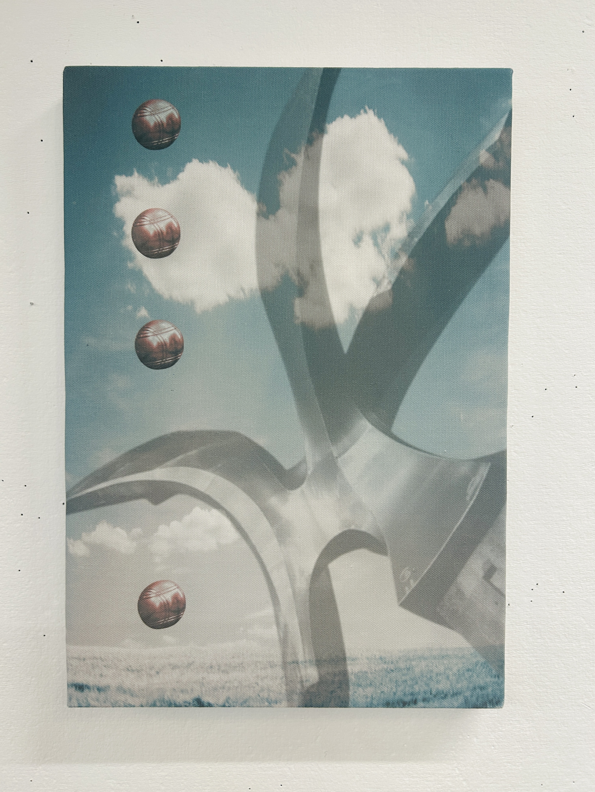
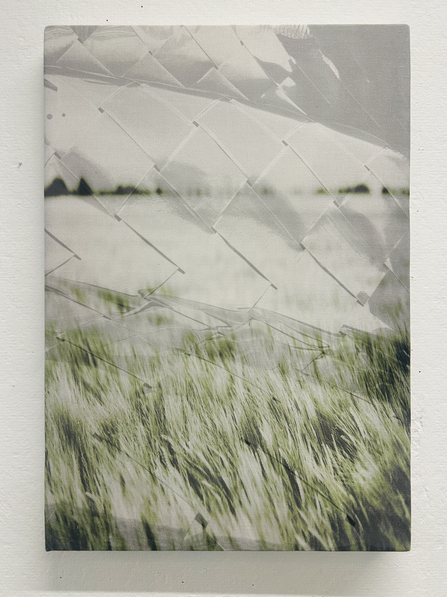
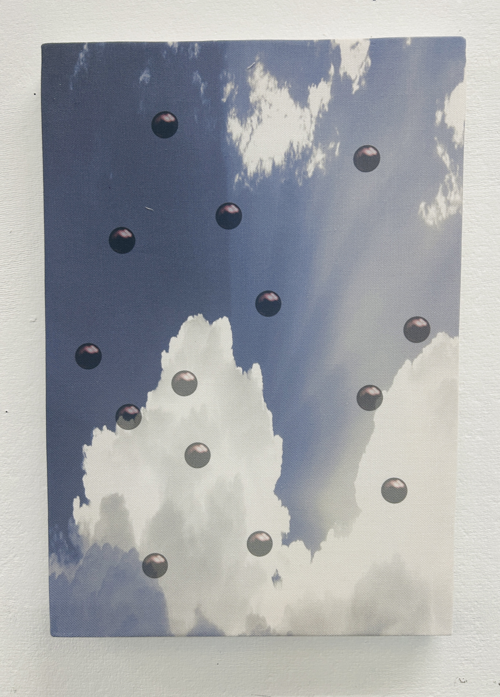
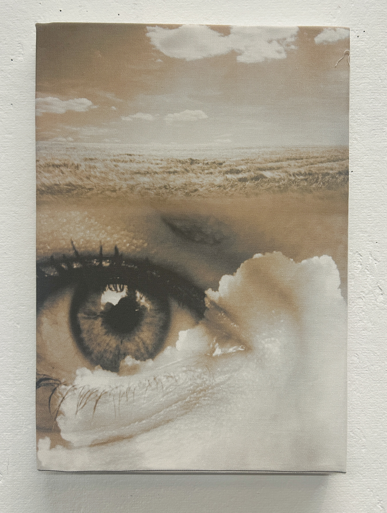

Painting, Acrylic on Canvas

Generative Print collection

Generative Print 1, Digital Print on Canvas

Generative Print 2, Digital Print on Canvas

Generative Print 3, Digital Print on Canvas

Generative Print 4, Digital Print on Canvas
Looking back on what I made this semester, I think I am more interested in how to combine the generative approach and the medium of code to painting in a way that does not interfere my painting practice. These two projects are thus a tryout for this approach. For the big acrylic painting, I was thinking more of the similarities between painters and generative machines. For the four prints, I was trying to combine the generative process to traditional canvas painting. . Over all, these projects allowed me to explore various techniques in generative art and traditional painting. Combining digital processes with physical media opened new avenues for creative expression and deepened my understanding of both disciplines.